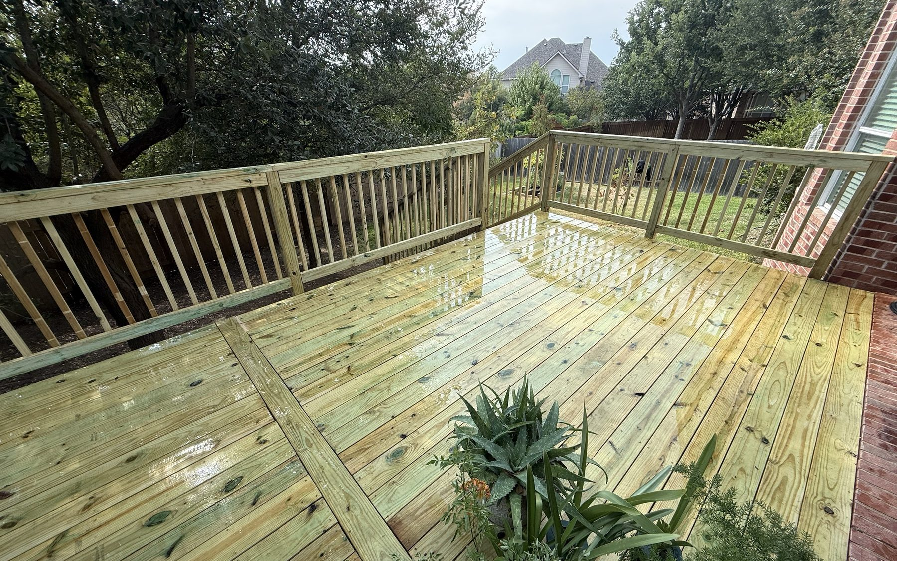

Most new decks in Austin cost $9,000 to $30,000 for a typical 300 sq ft build, and the material decides most of that spread. Pressure-treated pine costs the least, cedar sits in the middle, and composite costs the most up front and the least to keep up.
Below are our real 2026 numbers, then what moves the price up or down.
The short answer: real Austin deck pricing in 2026
Most full deck builds in greater Austin land in one of three buckets, depending mostly on the material you pick and the size of the build. These are total installed prices (materials, labor, hardware, demo, and cleanup) for a standard backyard deck:
| Decking material | Per square foot, installed | Typical 300 sqft deck |
|---|---|---|
| Pressure-treated pine | $30 to $45 | $9,000 to $13,500 |
| Western Red Cedar | $50 to $75 | $15,000 to $22,500 |
| Composite (Trex / Fiberon) | $60 to $100 | $18,000 to $30,000 |
Here is how those rates work out at three common sizes:
| Deck size | Pressure-treated | Cedar | Composite |
|---|---|---|---|
| 200 sq ft (about 10x20) | $6,000 to $9,000 | $10,000 to $15,000 | $12,000 to $20,000 |
| 300 sq ft (about 15x20) | $9,000 to $13,500 | $15,000 to $22,500 | $18,000 to $30,000 |
| 400 sq ft (about 20x20) | $12,000 to $18,000 | $20,000 to $30,000 | $24,000 to $40,000 |
These are honest 2026 ranges based on what we are quoting customers in Austin, Round Rock, Dripping Springs, Pflugerville, and across Hays, Travis, and Williamson counties. If a contractor quotes you well below the low end of this table, ask very pointed questions about the lumber grade, the framing, and the warranty. Cheap quotes get expensive in five years.
Want a real number for your deck? Send the rough size, the material you are leaning toward and a photo of the yard. John will measure and write up a line-itemed quote, free. No obligation.
Get my deck quote →What drives deck cost up or down in Austin
1. Material is the biggest single factor
The cost gap between pressure-treated pine and composite is usually 50 to 100 percent. Pressure-treated is a great-looking, durable deck if you stay on top of stain or sealer every two to three years.
Cedar is a step up in beauty and a step down in maintenance. Composite costs the most up front and saves the most over twenty years because you literally never seal it.
2. Square footage and shape
Square decks are cheaper than L-shaped, multi-level, or curved decks. Every cut and corner adds labor and hardware. A 200 sqft rectangle costs less per square foot than a 200 sqft deck that wraps around a corner of the house.
3. Height off the ground
A ground-level deck (under 30 inches) is usually the most affordable. Above 30 inches you need code-required railings, more substantial footings, and often stairs with structural stringers, all of which add cost. A second-story deck off the back of a two-story home can run 30 to 50 percent more per square foot than a ground-level one.
4. Built-in features
The pretty stuff has real costs. Rough adders to budget for:
- Custom railing: $40 to $90 per linear foot, depending on cable, metal, or wood.
- Built-in lighting: $400 to $1,800 for step lights and accents.
- Attached pergola: $10,500 to $16,000 for a 12x12 to 12x16 open-top cedar pergola. See our pergola cost guide.
- Built-in benches and planters: $300 to $800 per linear foot.
- Wood-plank ceiling under a covered deck: $12 to $25 per square foot.
5. Site conditions
If we have to demo an old deck, level a sloped yard, dig footings through limestone (you live in Austin, so probably yes), or work around utility lines, that work shows up in the quote. Most reputable contractors include site prep in the line items so you can see exactly what is going on.
Pressure-treated vs. cedar vs. composite, in plain English
Pressure-treated pine
The most common deck material in Austin and the most affordable. Treated at the mill to resist rot and termites.
Looks great when stained, lasts 20+ years with regular sealing, and can be painted any color. The downside is real: you are signing up for a stain or seal coat every two to three years if you want it to keep looking new.

Western Red Cedar
Naturally rot-resistant and bug-resistant without chemicals. Beautiful warm reddish-brown that weathers to a soft silver-grey if you let it. Lifespan is 25 to 30 years.
About 25 to 50 percent more than pressure-treated. We love cedar in the Texas climate because of how it ages and how it smells when it's fresh.
Composite (Trex, Fiberon, TimberTech)
Wood fiber blended with recycled plastic. Won't warp, splinter, or rot. No staining or sealing, ever.
Most premium boards carry 25-year warranties. The catch is upfront price (50 to 100 percent more than PT) and, if you pick a cheap composite, a slightly plasticky look.
Picking the right brand matters more than people realize. Talk to your contractor about which board they trust.
Where to save on deck cost (and where not to)
- Keep the shape simple. A straight rectangle costs much less to build than the same square footage with curves and angles.
- Pick PT and stain it well. A properly stained pressure-treated deck looks fantastic and lasts decades. Spend on a good stain, not exotic wood.
- Skip the upgraded railing if your deck is low. A deck under 30 inches doesn't need a railing. That can save $1,500 to $4,000 right there.
- Bundle related work. If you are also replacing a fence, doing siding, or fixing the roof, bundling can save real money on mobilization and dump fees.
- Don't cheap out on framing. The frame is the part you never see and the part that fails first if it's wrong. We use joist tape, hot-dipped galvanized hangers, and properly sized footings on every deck. That is not the place to save $300.
How long does a deck build take?
Most backyard decks take 5 to 10 working days from the day the crew shows up. Larger or multi-level builds can run 2 to 3 weeks.
Permits in Austin add another 1 to 4 weeks before the build starts, depending on the jurisdiction. We pull every permit ourselves and never start without one.

Not sure what shape or style you want yet? Browse our deck design ideas for Austin backyards before you price it out.
When should you start the conversation?
If you want a deck ready for grilling season, you want to be having the conversation with a contractor in February, March, or April. Spring and early summer book up first. Fall projects (October and November) usually have shorter lead times and more flexible scheduling.
Mid-summer is doable, but you'll be working around 100-degree weather, so keep that in mind. See the full month-by-month build season guide →
Ready for a real number? Skip the guessing. Send a few details and John will come out, measure and send a free, line-itemed quote.
Get my deck quote →Comparing quotes? The Austin contractor hiring playbook covers how to read one properly and what to ask before you sign.
Leaning toward composite? See Trex vs TimberTech vs Fiberon for Texas decks for how the brands and tiers compare.
Not sure your old deck needs replacing? Our guide to deck repair cost in Austin explains what repairs cost and how to tell a repair from a rebuild.
See the decks we have built on our Austin deck builder page.
Deck cost questions from Austin homeowners
How much does a 300 sq ft deck cost in Austin?
A 300 sq ft deck in Austin costs about $9,000 to $13,500 in pressure-treated pine, $15,000 to $22,500 in cedar and $18,000 to $30,000 in composite, installed. Height, stairs and railing move it within those ranges.
What is the cheapest way to build a deck in Austin?
Keep it a simple rectangle, build it low to the ground and use pressure-treated pine. A deck under 30 inches high often needs no railing, which saves a good part of the cost.
Is a composite deck worth the extra cost?
It is if you want to stop staining. Composite costs $60 to $100 per sq ft installed, against $30 to $45 for pressure-treated pine, but it never needs stain or sealer. Pick a light color for full Austin sun, because dark boards get hot underfoot.
Does my deck need a railing?
Decks more than 30 inches above the ground need a guardrail. Lower decks often do not, so wide steps, benches or planters can line the edge instead.
Do I need a permit to build a deck in Austin?
Most attached and raised decks need a building permit, and the rules depend on your city or county. We check which rules apply to your address and pull the permit ourselves before we start.
How long does it take to build a deck?
Most backyard decks take 5 to 10 working days once the crew starts. Larger or multi-level decks can take 2 to 3 weeks, and permits add time before the build begins.
How much does it cost to add a pergola or cover to a deck?
An attached open-top cedar pergola runs about $10,500 to $16,000 for a 12x12 to 12x16, and a solid-roof shingle cover of that size runs $14,500 to $22,000. It is easier and cheaper to plan the footings while the deck is being built.
Does a deck add value to an Austin home?
Yes, a well-built deck is one of the outdoor projects that adds the most value at resale, and simple, well-kept decks tend to return the most. Our deck resale value guide walks through the numbers.
Sources
- Work exempt from building permits, City of Austin Development Services: which decks, fences, retaining walls and small accessory structures can be built without a building permit.
Prices on this page come from our own 2026 Austin-area quotes. Rules change, so we check which ones apply to your address before every build. New to a term? See our plain-English glossary.